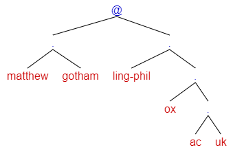

Matthew Gotham
Welcome to my web page. I am a theoretical linguist, specializing in semantics. What that means is that I spend my time researching how it is that sentences of natural language (like English) mean what they do, and how it is that we as language users can understand them. Information about my research activities and outputs can be found here, and a full CV is available here. This is my attempt to describe my PhD thesis using only the 1000 most common words in English. Here is my academic tree.
News
Recent publications
- Property Inheritance, Deferred Reference and Copredication. Journal of Semantics. Advance online publication.
- Event-related readings and degrees of difference. In Patrick Georg Grosz, Luisa Martí, Hazel Pearson, Yasutada Sudo & Sarah Zobel (eds.), Proceedings of Sinn und Bedeutung 25, 325–339.
Contact
| Faculty of Linguistics, Philology and Phonetics | |
|
University of Oxford Walton Street Oxford OX1 2HG United Kingdom |
 |